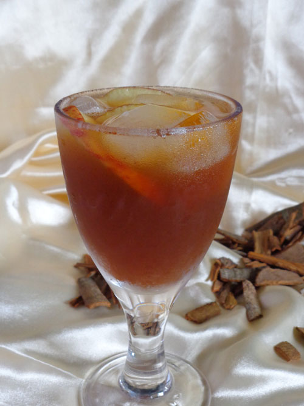
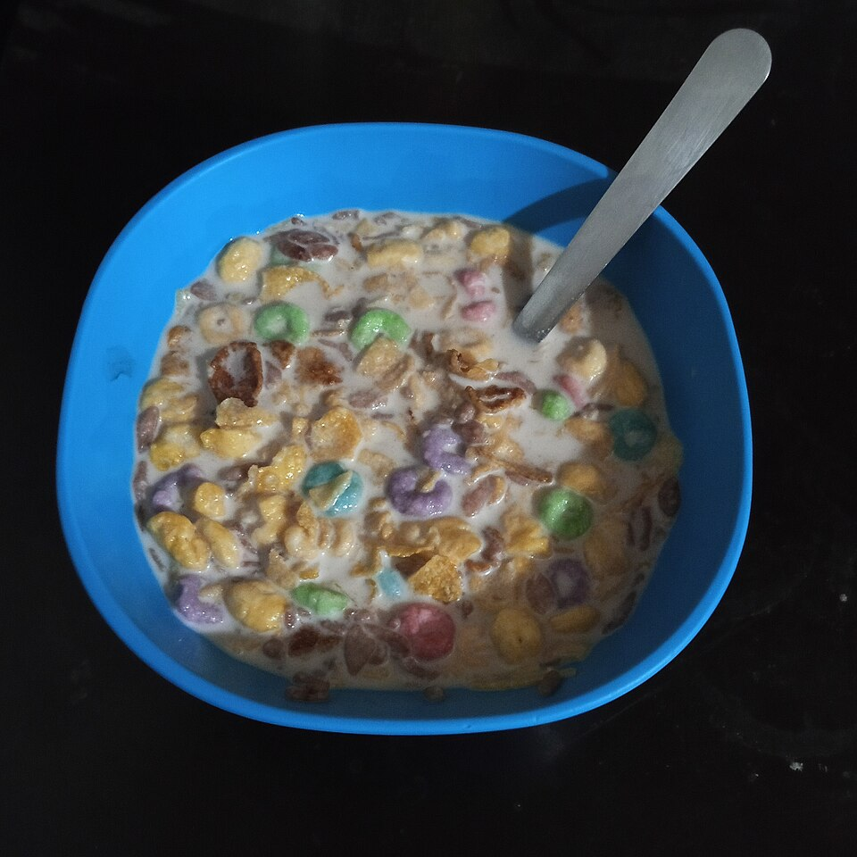

Fannie Merritt Farmer · 1910
Recipes from Another Time
320 original recipes drawn from a historic cookbook
❧ ───── ❦ ───── ❧
Explore original recipes from the 1910 edition of The Boston Cooking-School Cook Book. Each recipe includes its source, original instructions, and an illustrative image. Automated transcriptions are awaiting editorial review.
320 recipes

COOKERY · 1910How to Measure

BEVERAGES · 1910How to Make Tea

BEVERAGES · 1910Iced Tea

BEVERAGES · 1910Filtered Coffee

BEVERAGES · 1910Boiled Coffee

BEVERAGES · 1910After-Dinner Coffee

BEVERAGES · 1910Cocoa Shells

BEVERAGES · 1910Cracked Cocoa

BEVERAGES · 1910Breakfast Cocoa
BEVERAGES · 1910Reception Cocoa
BEVERAGES · 1910Brandy Cocoa
BEVERAGES · 1910Chocolate I
BEVERAGES · 1910Chocolate III
BEVERAGES · 1910Lemonade
BEVERAGES · 1910Pineapple Lemonade
BEVERAGES · 1910Mint Julep
BEVERAGES · 1910Claret Punch
BEVERAGES · 1910Fruit Punch I
BEVERAGES · 1910Fruit Punch II
BEVERAGES · 1910Fruit Punch III
BEVERAGES · 1910Fruit Punch IV
BEVERAGES · 1910Ginger Punch
BEVERAGES · 1910Champagne Punch
BEVERAGES · 1910Club Punch
BEVERAGES · 1910Unfermented Grape Juice
BEVERAGES · 1910Claret Cup
BEVERAGES · 1910Sauterne Cup
BREAD AND BREAD MAKING · 1910Yeast
BREAD AND BREAD MAKING · 1910Bread Making
BREAD AND BREAD MAKING · 1910Care of Bread after Baking
BREAD AND BREAD MAKING · 1910Water Bread
BREAD AND BREAD MAKING · 1910Milk and Water Bread
BREAD AND BREAD MAKING · 1910Entire Wheat Bread
BREAD AND BREAD MAKING · 1910Graham Bread
BREAD AND BREAD MAKING · 1910Third Bread
BREAD AND BREAD MAKING · 1910Rolled Oats Bread
BREAD AND BREAD MAKING · 1910Rye Bread
BREAD AND BREAD MAKING · 1910Boston Brown Bread
BREAD AND BREAD MAKING · 1910New England Brown Bread
BREAD AND BREAD MAKING · 1910Indian Bread
BREAD AND BREAD MAKING · 1910Steamed Graham Bread
BREAD AND BREAD MAKING · 1910Parker House Rolls
BREAD AND BREAD MAKING · 1910Sticks
BREAD AND BREAD MAKING · 1910Sweet French Rolls
BREAD AND BREAD MAKING · 1910Luncheon Rolls
BREAD AND BREAD MAKING · 1910French Rusks
BREAD AND BREAD MAKING · 1910Rusks (Zweiback)
BREAD AND BREAD MAKING · 1910German Coffee Bread
BREAD AND BREAD MAKING · 1910Coffee Cakes (Brioche)
BREAD AND BREAD MAKING · 1910Coffee Rolls
BREAD AND BREAD MAKING · 1910Swedish Bread
BREAD AND BREAD MAKING · 1910Dutch Apple Cake
BREAD AND BREAD MAKING · 1910Buns
BREAD AND BREAD MAKING · 1910Hot Cross Buns
BREAD AND BREAD MAKING · 1910Raised Muffins
BREAD AND BREAD MAKING · 1910Raised Hominy Muffins
BREAD AND BREAD MAKING · 1910Raised Oatmeal Muffins
BREAD AND BREAD MAKING · 1910Health Food Muffins
BREAD AND BREAD MAKING · 1910Squash Biscuits
BREAD AND BREAD MAKING · 1910Imperial Muffins
BREAD AND BREAD MAKING · 1910Milk Toast I
BREAD AND BREAD MAKING · 1910Tomato Cream Toast
BREAD AND BREAD MAKING · 1910German Toast
BISCUITS, BREAKFAST CAKES, AND SHORTCAKES · 1910Batters, Sponges, and Doughs
BISCUITS, BREAKFAST CAKES, AND SHORTCAKES · 1910Cream Scones
BISCUITS, BREAKFAST CAKES, AND SHORTCAKES · 1910Baking Powder Biscuit I
BISCUITS, BREAKFAST CAKES, AND SHORTCAKES · 1910Baking Powder Biscuit II
BISCUITS, BREAKFAST CAKES, AND SHORTCAKES · 1910Fruit Rolls (Pin Wheel Biscuit)
BISCUITS, BREAKFAST CAKES, AND SHORTCAKES · 1910Twin Mountain Muffins
BISCUITS, BREAKFAST CAKES, AND SHORTCAKES · 1910One Egg Muffins I
BISCUITS, BREAKFAST CAKES, AND SHORTCAKES · 1910One Egg Muffins II
BISCUITS, BREAKFAST CAKES, AND SHORTCAKES · 1910Berry Muffins I (without eggs)
BISCUITS, BREAKFAST CAKES, AND SHORTCAKES · 1910Berry Muffins II
BISCUITS, BREAKFAST CAKES, AND SHORTCAKES · 1910Queen of Muffins
BISCUITS, BREAKFAST CAKES, AND SHORTCAKES · 1910Rice Muffins
BISCUITS, BREAKFAST CAKES, AND SHORTCAKES · 1910Oatmeal Muffins
BISCUITS, BREAKFAST CAKES, AND SHORTCAKES · 1910Graham Muffins I
BISCUITS, BREAKFAST CAKES, AND SHORTCAKES · 1910Graham Muffins II
BISCUITS, BREAKFAST CAKES, AND SHORTCAKES · 1910Rye Muffins II
BISCUITS, BREAKFAST CAKES, AND SHORTCAKES · 1910Rye Gems
BISCUITS, BREAKFAST CAKES, AND SHORTCAKES · 1910Corn Meal Gems
BISCUITS, BREAKFAST CAKES, AND SHORTCAKES · 1910Hominy Gems
BISCUITS, BREAKFAST CAKES, AND SHORTCAKES · 1910Berkshire Muffins
BISCUITS, BREAKFAST CAKES, AND SHORTCAKES · 1910Golden Corn Cake
BISCUITS, BREAKFAST CAKES, AND SHORTCAKES · 1910Corn Cake (sweetened with Molasses)
BISCUITS, BREAKFAST CAKES, AND SHORTCAKES · 1910White Corn Cake
BISCUITS, BREAKFAST CAKES, AND SHORTCAKES · 1910Rich Corn Cake
BISCUITS, BREAKFAST CAKES, AND SHORTCAKES · 1910Susie’s Spider Corn Cake
BISCUITS, BREAKFAST CAKES, AND SHORTCAKES · 1910White Corn Meal Cake
BISCUITS, BREAKFAST CAKES, AND SHORTCAKES · 1910Pop-overs
BISCUITS, BREAKFAST CAKES, AND SHORTCAKES · 1910Graham Pop-overs
BISCUITS, BREAKFAST CAKES, AND SHORTCAKES · 1910Breakfast Puffs
BISCUITS, BREAKFAST CAKES, AND SHORTCAKES · 1910Fadges
BISCUITS, BREAKFAST CAKES, AND SHORTCAKES · 1910Zante Muffins
BISCUITS, BREAKFAST CAKES, AND SHORTCAKES · 1910Maryland Biscuit
BISCUITS, BREAKFAST CAKES, AND SHORTCAKES · 1910Sour Milk Griddle-cakes
BISCUITS, BREAKFAST CAKES, AND SHORTCAKES · 1910Sweet Milk Griddle-cakes
BISCUITS, BREAKFAST CAKES, AND SHORTCAKES · 1910Entire Wheat Griddle-cakes
BISCUITS, BREAKFAST CAKES, AND SHORTCAKES · 1910Corn Griddle-cakes
BISCUITS, BREAKFAST CAKES, AND SHORTCAKES · 1910Rice Griddle-cakes I
BISCUITS, BREAKFAST CAKES, AND SHORTCAKES · 1910Rice Griddle-cakes II
BISCUITS, BREAKFAST CAKES, AND SHORTCAKES · 1910Bread Griddle-cakes
BISCUITS, BREAKFAST CAKES, AND SHORTCAKES · 1910Buckwheat Cakes
BISCUITS, BREAKFAST CAKES, AND SHORTCAKES · 1910Waffles
BISCUITS, BREAKFAST CAKES, AND SHORTCAKES · 1910Waffles with Boiled Cider
BISCUITS, BREAKFAST CAKES, AND SHORTCAKES · 1910Rice Waffles
BISCUITS, BREAKFAST CAKES, AND SHORTCAKES · 1910Virginia Waffles
BISCUITS, BREAKFAST CAKES, AND SHORTCAKES · 1910Raised Waffles
BISCUITS, BREAKFAST CAKES, AND SHORTCAKES · 1910Fried Drop Cakes
BISCUITS, BREAKFAST CAKES, AND SHORTCAKES · 1910Rye Drop Cakes
BISCUITS, BREAKFAST CAKES, AND SHORTCAKES · 1910Raised Doughnuts
BISCUITS, BREAKFAST CAKES, AND SHORTCAKES · 1910Doughnuts I
BISCUITS, BREAKFAST CAKES, AND SHORTCAKES · 1910Doughnuts II
BISCUITS, BREAKFAST CAKES, AND SHORTCAKES · 1910Doughnuts III
BISCUITS, BREAKFAST CAKES, AND SHORTCAKES · 1910Crullers
BISCUITS, BREAKFAST CAKES, AND SHORTCAKES · 1910Strawberry Short Cake I
BISCUITS, BREAKFAST CAKES, AND SHORTCAKES · 1910Strawberry Short Cake II
BISCUITS, BREAKFAST CAKES, AND SHORTCAKES · 1910Rich Strawberry Short Cake
BISCUITS, BREAKFAST CAKES, AND SHORTCAKES · 1910Fruit Short Cake
CEREALS · 1910Cereal with Fruit
CEREALS · 1910Fried Mushes
CEREALS · 1910Boiled Rice
CEREALS · 1910Steamed Rice
CEREALS · 1910Turkish Pilaf II
CEREALS · 1910Turkish Pilaf III
CEREALS · 1910Rissoto Creole
CEREALS · 1910Boiled Macaroni
CEREALS · 1910Macaroni with White Sauce
CEREALS · 1910Macaroni à l’Italienne
CEREALS · 1910Macaroni, Italian Style
CEREALS · 1910Ravioli
CEREALS · 1910Tomato Sauce
EGGS · 1910Boiled Eggs
EGGS · 1910Eggs à la Suisse
EGGS · 1910Eggs Susette
EGGS · 1910Baked or Shirred Eggs
EGGS · 1910Eggs à la Lee
EGGS · 1910Poached Eggs with Sauce Bearnaise
EGGS · 1910Scrambled Eggs
EGGS · 1910Scrambled Eggs with Tomato Sauce
EGGS · 1910Eggs à la Livingstone
EGGS · 1910Buttered Eggs
EGGS · 1910Eggs à la Goldenrod
EGGS · 1910Eggs in Batter
EGGS · 1910Curried Eggs I
EGGS · 1910Curried Eggs II
EGGS · 1910Scalloped Eggs
EGGS · 1910Eggs Huntington
EGGS · 1910Lucanian Eggs
EGGS · 1910Egg Soufflé
EGGS · 1910Egg Timbales
EGGS · 1910Egg Croquettes
EGGS · 1910Eggs à la Parisienne
EGGS · 1910Plain Omelet
EGGS · 1910Orange Omelet
EGGS · 1910Bread Omelet
EGGS · 1910French Omelet
EGGS · 1910Omelet with Croûtons
EGGS · 1910Spanish Omelet
EGGS · 1910Rich Omelet
EGGS · 1910Omelette Robespierre
EGGS · 1910Almond Omelet, Caramel Sauce
SOUPS · 1910How to Clear Soup Stock
SOUPS · 1910Brown Soup Stock
SOUPS · 1910Bouillon
SOUPS · 1910Tomato Bouillon with Oysters
SOUPS · 1910Macaroni Soup
SOUPS · 1910Tomato Soup with Stock
SOUPS · 1910Turkish Soup
SOUPS · 1910Creole Soup
SOUPS · 1910Dinner Soup
SOUPS · 1910Bortchock Soup
SOUPS · 1910Ox-tail Soup
SOUPS · 1910Scotch Soup
SOUPS · 1910White Soup Stock I
SOUPS · 1910White Soup Stock II
SOUPS · 1910Chicken Soup with Wine
SOUPS · 1910French White Soup
SOUPS · 1910White Soup
SOUPS · 1910Chicken Soup
SOUPS · 1910Hygienic Soup
SOUPS · 1910Farina Soup
SOUPS · 1910Spring Soup
SOUPS · 1910Duchess Soup
SOUPS · 1910Potage à la Reine
SOUPS · 1910Royal Soup
SOUPS · 1910St. Germain Soup
SOUPS · 1910Imperial Soup
SOUPS · 1910Veal and Sago Soup
SOUPS · 1910Asparagus Soup
SOUPS · 1910Cream of Celery Soup
SOUPS · 1910Spinach Soup
SOUPS · 1910Cream of Lettuce Soup
SOUPS · 1910Mushroom Soup
SOUPS · 1910Cream of Mushroom Soup
SOUPS · 1910Cream of Watercress Soup
SOUPS · 1910Cream of Cauliflower Soup
SOUPS · 1910Cucumber Soup
SOUPS · 1910Almond Soup
SOUPS · 1910String Bean Soup
SOUPS · 1910Chestnut Purée
SOUPS · 1910Crab Soup
SOUPS · 1910Philadelphia Pepper Pot
SOUPS · 1910Mulligatawny Soup
SOUPS · 1910Mock Turtle Soup
SOUPS · 1910Consommé
SOUPS · 1910Consommé Colbert
SOUPS · 1910Oyster Stew
SOUPS · 1910Oyster Soup
SOUPS · 1910Oyster Soup, Amsterdam Style
SOUPS · 1910Oyster Gumbo
SOUPS · 1910Clam Soup with Poached Eggs
SOUPS · 1910Clam and Oyster Soup
SOUPS · 1910Clam and Tomato Bisque
SOUPS · 1910Oyster Bisque
SOUPS · 1910Cream of Scallop Soup
SOUPS · 1910Lobster Bisque
SOUPS WITHOUT STOCK · 1910Black Bean Soup
SOUPS WITHOUT STOCK · 1910Baked Bean Soup
SOUPS WITHOUT STOCK · 1910Cream of Lima Bean Soup
SOUPS WITHOUT STOCK · 1910Cream of Artichoke Soup
SOUPS WITHOUT STOCK · 1910Celery Soup I
SOUPS WITHOUT STOCK · 1910Celery Soup II
SOUPS WITHOUT STOCK · 1910Corn Soup
SOUPS WITHOUT STOCK · 1910Halibut Soup
SOUPS WITHOUT STOCK · 1910Pea Soup
SOUPS WITHOUT STOCK · 1910Split Pea Soup
SOUPS WITHOUT STOCK · 1910Kornlet Soup
SOUPS WITHOUT STOCK · 1910Potato Soup
SOUPS WITHOUT STOCK · 1910Swiss Potato Soup
SOUPS WITHOUT STOCK · 1910Leek and Potato Soup
SOUPS WITHOUT STOCK · 1910Vegetable Soup
SOUPS WITHOUT STOCK · 1910Salmon Soup
SOUPS WITHOUT STOCK · 1910Squash Soup
SOUPS WITHOUT STOCK · 1910Tomato Soup
SOUPS WITHOUT STOCK · 1910Cream of Tomato Soup
SOUPS WITHOUT STOCK · 1910Mock Bisque Soup
SOUPS WITHOUT STOCK · 1910Tapioca Wine Soup
SOUPS WITHOUT STOCK · 1910Corn Chowder
SOUPS WITHOUT STOCK · 1910Fish Chowder
SOUPS WITHOUT STOCK · 1910Connecticut Chowder
SOUPS WITHOUT STOCK · 1910Clam Chowder
SOUPS WITHOUT STOCK · 1910Rhode Island Chowder
SOUPS WITHOUT STOCK · 1910Lobster Chowder
SOUPS WITHOUT STOCK · 1910German Chowder
SOUP GARNISHINGS AND FORCE-MEATS · 1910Imperial Sticks in Rings
SOUP GARNISHINGS AND FORCE-MEATS · 1910Egg Balls I
SOUP GARNISHINGS AND FORCE-MEATS · 1910Egg Balls II
SOUP GARNISHINGS AND FORCE-MEATS · 1910Egg Custard
SOUP GARNISHINGS AND FORCE-MEATS · 1910Harlequin Slices
SOUP GARNISHINGS AND FORCE-MEATS · 1910Royal Custard
SOUP GARNISHINGS AND FORCE-MEATS · 1910Noodles
SOUP GARNISHINGS AND FORCE-MEATS · 1910Fritter Beans
SOUP GARNISHINGS AND FORCE-MEATS · 1910Pâte à Choux
SOUP GARNISHINGS AND FORCE-MEATS · 1910Fish Force-meat I
SOUP GARNISHINGS AND FORCE-MEATS · 1910Fish Force-meat II
SOUP GARNISHINGS AND FORCE-MEATS · 1910Salmon Force-meat
SOUP GARNISHINGS AND FORCE-MEATS · 1910Chicken Force-meat I
SOUP GARNISHINGS AND FORCE-MEATS · 1910Chicken Force-meat II
FISH · 1910White and Oily Fish
FISH · 1910I. Bivalve Mollusks
FISH · 1910II. Crustaceans
FISH · 1910Boiled Salmon
FISH · 1910Steamed Halibut, Silesian Sauce
FISH · 1910Broiled Shad Roe
FISH · 1910Broiled Pompano with Fricassee of Clams
FISH · 1910Fish Stuffing I
FISH · 1910Fish Stuffing II
FISH · 1910Oyster Stuffing
FISH · 1910Baked Halibut with Tomato Sauce
FISH · 1910Planked Shad or Whitefish
FISH · 1910Baked Stuffed Smelts
FISH · 1910Smelts à la Langtry
FISH · 1910Fillets of Halibut with Brown Sauce
FISH · 1910Halibut à la Poulette
FISH · 1910Moulded Fish, Normandy Sauce
FISH · 1910Fillets of Fish à la Bement
FISH · 1910Halibut à la Rarebit
FISH · 1910Sole à la Bercy
FISH · 1910Halibut au Lit
FISH · 1910Fried Smelts
FISH · 1910Fried Fillets of Halibut or Flounder
FISH · 1910Fried Fish, Russian Style, Mushroom Sauce
FISH · 1910Soft-shell Crabs
FISH · 1910Terrapin
FISH · 1910Terrapin à la Baltimore
FISH · 1910Terrapin à la Maryland
FISH · 1910Washington Terrapin
FISH · 1910Fish à la Crême
FISH · 1910Turban of Fish
FISH · 1910Salmon Box
FISH · 1910Fish Balls
FISH · 1910Toasted Salt Fish
FISH · 1910Raw Oysters
FISH · 1910Oyster Cocktail I
FISH · 1910Oyster Cocktail II
FISH · 1910Roasted Oysters
FISH · 1910Oysters à la Ballard
FISH · 1910Panned Oysters
FISH · 1910Oyster Fricassee
FISH · 1910Creamed Oysters
FISH · 1910Oysters in Brown Sauce
FISH · 1910Savory Oysters
FISH · 1910Oysters à la Astor
FISH · 1910Broiled Oysters
FISH · 1910Oysters and Macaroni
FISH · 1910Scalloped Oysters
FISH · 1910Batter
FISH · 1910Fried Oysters. Philadelphia Relish
FISH · 1910Clams à la Grand Union
FISH · 1910Fried Lobster
FISH · 1910Buttered Lobster
FISH · 1910Scalloped Lobster
FISH · 1910Lobster Farci
FISH · 1910Lobster and Oyster Filling
FISH · 1910Fricassee of Lobster and Mushrooms
FISH · 1910Lobster and Oyster Ragout
FISH · 1910Stuffed Lobster à la Béchamel
FISH · 1910Broiled Live Lobster
FISH · 1910Baked Live Lobster. Devilled Sauce.